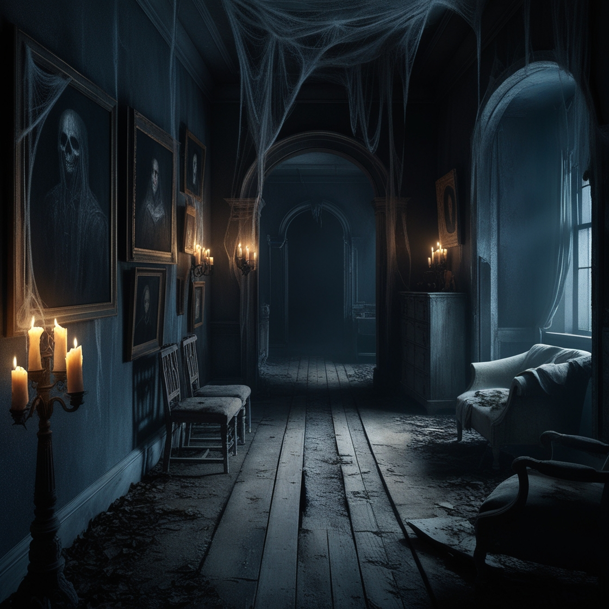

Historia

El Eco del Vacío
Desde que era niño, Logan había temido a la soledad. Creció en una casa grande y antigua, donde los ecos de su propia voz eran su única compañía. Sus padres, siempre ausentes por trabajo o viajes, dejaban el hogar sumido en un silencio abrumador. Con el tiempo, el silencio se convirtió en su mayor enemigo, y aunque logró llenar su vida de ruido con amigos y distracciones, el miedo a quedarse solo jamás lo abandonó.
Años después, tras la muerte de sus padres, Logan heredó la casa familiar. Al principio, evitó volver, temiendo que el lugar despertara recuerdos dolorosos. Pero, impulsado por la necesidad de cerrar ese capítulo de su vida, decidió enfrentarse a sus miedos y mudarse allí.
La primera noche, el vacío de la casa lo envolvió. Cada rincón parecía recordar su presencia, como si la misma casa hubiera estado esperando su regreso. Las sombras danzaban en las esquinas, y el crujido de las maderas le recordaba que, aunque todo estaba en su lugar, algo había cambiado. Se convenció de que solo eran recuerdos reprimidos, pero una sensación creciente de ser observado lo atormentaba.
Con el pasar de los días, los fenómenos extraños comenzaron. Puertas que se cerraban solas, susurros en la noche, y una presencia constante que lo seguía por los pasillos. El miedo se fue convirtiendo en paranoia, y la casa se transformó en una prisión de la que no podía escapar. Logan intentaba buscar la lógica detrás de todo, pero el terror lo superaba.
Una noche, mientras caminaba por el pasillo principal, vio una sombra al final del corredor. Parecía la figura de un niño, pequeño y desamparado. Su corazón se detuvo al reconocer en esa figura a sí mismo de niño, una versión de él que había quedado atrapada en el pasado. El niño lo miraba con ojos llenos de tristeza, como si hubiera estado esperando que alguien lo rescatara de su soledad.
Logan se acercó, temblando, y cuando extendió la mano hacia la figura, una ráfaga de recuerdos lo golpeó. Sintió el dolor de años de abandono, el eco de las risas que nunca compartió, las noches interminables de silencio. Pero en medio de ese dolor, algo cambió. Comprendió que la casa no lo estaba torturando, sino que le mostraba aquello que había ignorado durante tanto tiempo: la necesidad de aceptar su soledad para poder sanar.
Con lágrimas en los ojos, Logan abrazó a su yo niño, reconociendo el dolor que había reprimido. La figura se desvaneció en sus brazos, dejando tras de sí una sensación de paz que nunca antes había experimentado. El peso en su pecho desapareció, y por primera vez en mucho tiempo, el silencio de la casa no lo asustaba.
Logan comprendió que el verdadero terror no estaba en la casa, sino en el miedo a enfrentar sus propios demonios. Al aceptar su soledad, dejó de ser su enemigo. La casa, que antes parecía un lugar de tortura, se convirtió en un refugio donde podía finalmente encontrar la paz que tanto había buscado.